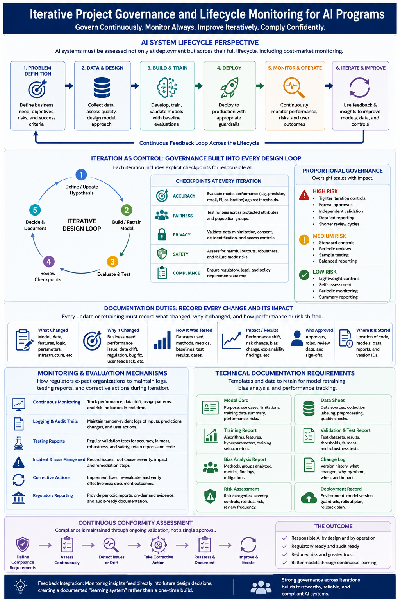

Case Study 05
AI / Data Science – Corporate Banking Loan Risk Prediction
🤖 Domain: AI / Data Science / Corporate Banking
💼 Role: AI / Data Science Program / Project Manager
🏦 Business Area: Corporate Lending & Credit Risk
📊 AI Capability: Loan Risk Prediction
🧠 Model: Machine Learning / XGBoost
Business Challenge
The corporate banking organization required a
data-driven approach to assess borrower credit
risk and identify potential loan default risks
earlier in the lending lifecycle.
Traditional credit assessment relied heavily on
historical financial information, manually
evaluated risk indicators and rule-based
decision processes.
The AI initiative focused on developing a
machine-learning-based loan risk prediction
capability that could analyze historical borrower
and loan data, identify risk patterns and provide
predictive insights to support credit assessment
and portfolio risk management.
Program Scope
-
Define the business problem and AI use case for
corporate loan risk prediction.
-
Identify and integrate relevant borrower,
financial and loan datasets.
-
Perform data profiling, cleansing and
exploratory data analysis.
-
Engineer predictive features relevant to
borrower and loan risk.
-
Develop and train machine learning models.
-
Evaluate model accuracy, precision, recall,
F1-score and ROC-AUC.
-
Select and validate the appropriate model for
business use.
-
Develop an AI inference and prediction service.
-
Integrate AI predictions with the credit-risk
decision process.
-
Establish model monitoring, governance and
continuous improvement.
Business Objectives
-
Improve early identification of high-risk
corporate borrowers.
-
Support data-driven credit assessment.
-
Improve consistency in risk evaluation.
-
Reduce dependency on manual risk assessment
processes.
-
Provide predictive insights to credit officers
and risk management teams.
-
Enable proactive monitoring of loan portfolios.
-
Establish a scalable foundation for future
AI-driven banking use cases.
Data & Feature Engineering
The AI solution used historical banking and borrower
information to create predictive features for loan
risk assessment.
-
Borrower financial information.
-
Revenue and profitability indicators.
-
Debt and leverage ratios.
-
Credit history and repayment behavior.
-
Existing loan exposure.
-
Loan amount, tenure and interest information.
-
Payment and delinquency indicators.
-
Historical default and repayment outcomes.
-
Customer and account-level attributes.
-
Derived financial and behavioral risk features.
Technology Architecture
The target architecture establishes an end-to-end
AI and data pipeline covering data ingestion,
preparation, feature engineering, model training,
model deployment, prediction and monitoring.

AI Project Lifecycle & Governance –
Corporate Banking Loan Risk Prediction
Architecture Components
-
Data Sources:
Corporate customer, loan, financial,
repayment and credit-risk data.
-
Data Ingestion:
Batch and enterprise data ingestion pipelines
for collecting historical and operational data.
-
Data Lake / Data Platform:
Centralized storage for raw, processed and
analytical datasets.
-
Data Engineering:
Data cleansing, transformation, validation,
aggregation and feature preparation.
-
Feature Engineering:
Creation of financial, behavioral and
credit-risk features used by machine-learning
models.
-
Machine Learning Platform:
Python-based development and machine-learning
model training.
-
Model:
XGBoost-based classification model for
predicting loan risk.
-
Model Validation:
Model performance, validation and business
acceptance assessment.
-
Model Deployment:
Deployment of the approved model as an
inference / prediction service.
-
Prediction Layer:
Generates loan-risk predictions and risk
indicators for consuming applications.
-
Monitoring:
Monitoring of model performance, data quality,
prediction behavior and operational health.
-
Governance:
Model versioning, approval, documentation,
auditability and controlled model lifecycle.
AI Project Lifecycle
The AI initiative followed a structured lifecycle
covering business problem definition, data and
solution design, model development, deployment,
operational monitoring and continuous improvement.
01 — Problem Definition
-
Defined the corporate banking loan-risk
business problem.
-
Identified the target business outcome and
prediction objective.
-
Defined the target variable and risk
classification approach.
-
Identified business stakeholders including
Credit Risk, Corporate Banking and Data Science
teams.
-
Established AI success criteria and business
acceptance criteria.
-
Defined model explainability and governance
requirements.
02 — Data & Design
-
Identified relevant internal banking datasets.
-
Performed data availability and data-quality
assessment.
-
Conducted exploratory data analysis.
-
Defined data preparation and transformation
requirements.
-
Designed feature engineering approach.
-
Defined training, validation and test datasets.
-
Established AI solution architecture and
integration approach.
-
Defined security, privacy and governance
requirements.
03 — Build & Train
-
Prepared and transformed historical training
data.
-
Developed predictive features using Python.
-
Built baseline machine-learning models.
-
Developed and trained the XGBoost classification
model.
-
Performed model tuning and parameter
optimization.
-
Evaluated precision, recall, F1-score and
ROC-AUC.
-
Performed model validation using independent
test data.
-
Reviewed model outputs with business and
credit-risk stakeholders.
04 — Deploy
-
Prepared the validated model for production
deployment.
-
Established model versioning and deployment
controls.
-
Exposed prediction capability through an
application/API layer.
-
Integrated predictions with downstream
banking or risk-management processes.
-
Conducted production-readiness validation.
-
Established rollback and recovery procedures.
-
Coordinated business validation and production
Go-Live.
05 — Monitor & Operate
-
Monitored model prediction performance.
-
Monitored input data quality and completeness.
-
Identified data drift and changes in borrower
characteristics.
-
Monitored model operational availability.
-
Tracked prediction exceptions and operational
incidents.
-
Established model performance reporting.
-
Maintained model documentation and governance
records.
-
Coordinated production support and operational
teams.
06 — Iterate & Improve
-
Reviewed model performance against business
outcomes.
-
Identified opportunities for additional
features and data sources.
-
Re-trained the model using refreshed data when
required.
-
Evaluated model performance degradation.
-
Improved feature engineering and model
parameters.
-
Incorporated feedback from Credit Risk and
business stakeholders.
-
Managed controlled model releases and
re-validation.
-
Extended the AI platform for additional
banking risk use cases.
AI Governance
-
Business ownership and model accountability.
-
Data quality and data lineage management.
-
Model versioning and change management.
-
Model validation and independent review.
-
Explainability and transparency of model
predictions.
-
Model performance and drift monitoring.
-
Security and access control.
-
Audit trail and model documentation.
-
Controlled production deployment and rollback.
-
Periodic model review and re-validation.
Program Management Focus
-
AI strategy, roadmap and delivery governance.
-
Coordination between business, credit-risk,
data engineering, data science and technology
teams.
-
Data dependency and data-quality management.
-
AI solution architecture governance.
-
Model development and validation governance.
-
Risk, issue and dependency management.
-
Stakeholder and executive communication.
-
Release and production-readiness governance.
-
AI operational transition and support.
-
Continuous improvement and AI roadmap
management.
Technology Landscape
-
Python
-
XGBoost
-
Machine Learning
-
Data Engineering
-
Data Lake / Data Platform
-
ETL / Data Integration
-
AWS / Cloud Platform
-
AWS Glue
-
Snowflake / Data Warehouse
-
REST APIs
-
Docker / Kubernetes
-
CI/CD and DevOps
-
Model Monitoring
-
Data Quality & Governance
AI Transformation Outcome
Established an end-to-end AI capability for
corporate banking loan risk prediction,
connecting banking data, feature engineering,
machine-learning model development, deployment,
monitoring and continuous improvement within a
governed AI lifecycle.
Program Management Takeaway:
An enterprise AI initiative is not only a
machine-learning development exercise. Successful
AI delivery requires alignment of the business
problem, data strategy, technology architecture,
model lifecycle, governance, deployment,
operational monitoring and continuous improvement.
The program manager provides the governance layer
connecting business outcomes with data science and
technology execution.